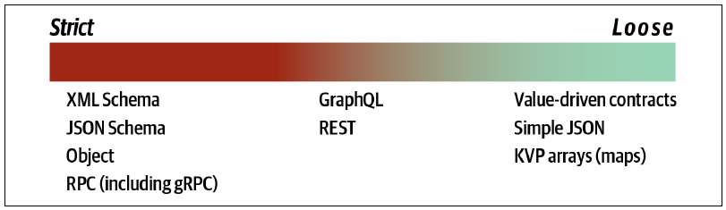
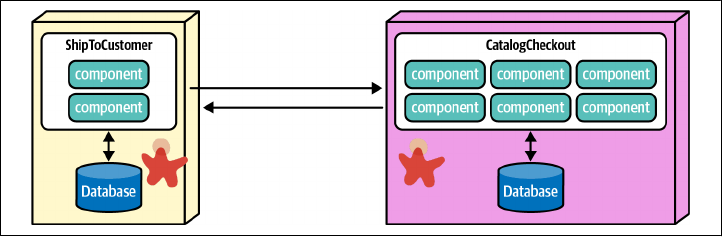
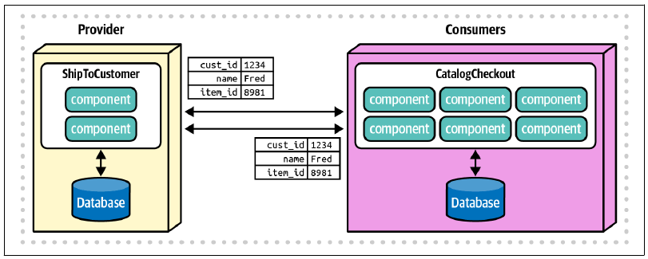
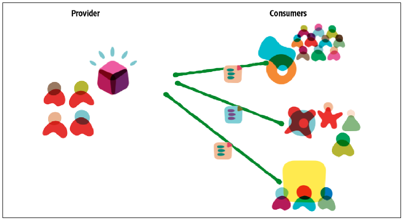
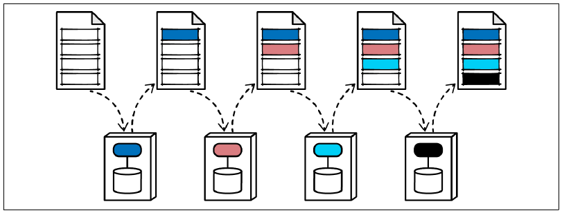
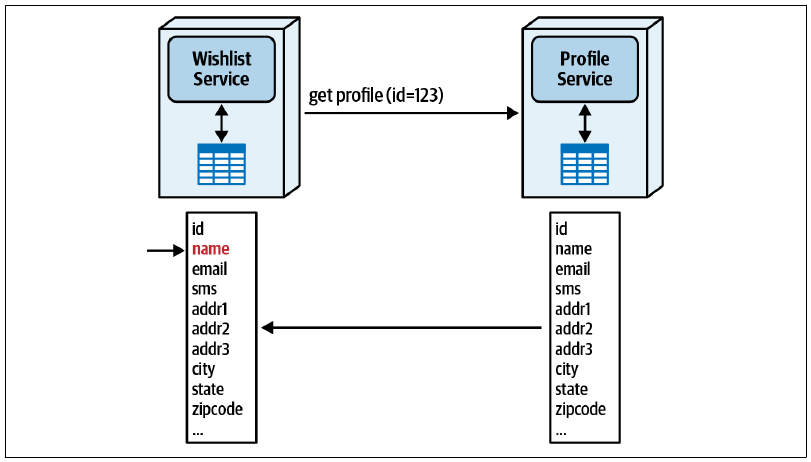
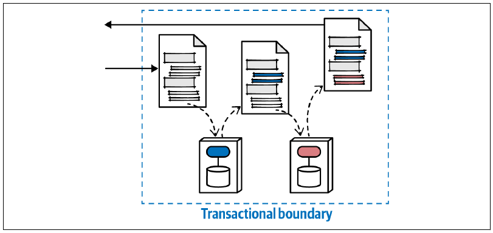
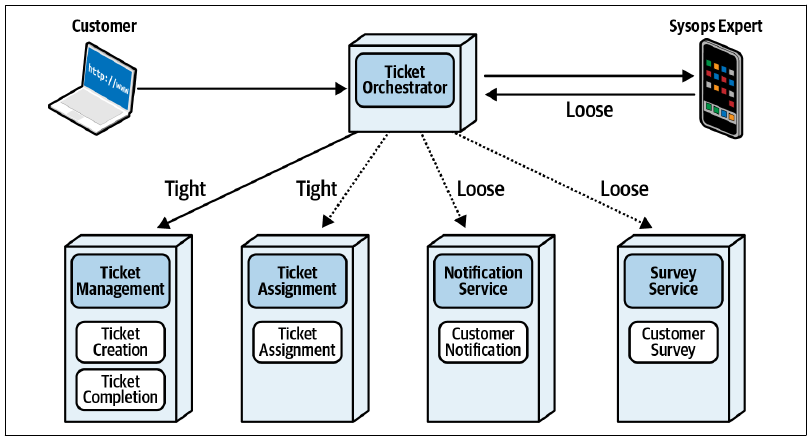

13 契约
4 月 15 日，星期五，12:01
午餐时，Addison 与 Sydney 在餐厅碰面，讨论工单管理工作流中，工单协调器与它所集成服务之间的协调问题。
“为什么不让所有通信都使用 gRPC？我听说它速度很快。”Sydney 说。
“那是一种实现，不是架构，”Addison 说，“在选择实现方式之前，需要先决定采用哪一种契约。首先要在严格契约与宽松契约之间选择。类型确定后，只要实现能够通过适应度函数，我会把具体方式交给你决定。”
“什么因素决定我们需要哪种契约？”Sydney 问。
第 2 章开始讨论三种重要力量——通信、一致性与协调——的交集，以及如何围绕它们形成权衡。我们把三种力量的相交空间建模为一个组合的三维空间，图 图 13.1 再次展示了该模型。第 12 章则通过各种通信风格及其权衡重新考察了这些力量。

架构无论多么善于辨识这类关系，总有一些力量会横切概念空间，并同等影响其他所有维度。沿用三维视觉隐喻，这些横切力量就像额外的维度，如同时间与三个物理维度正交。
软件架构中有一个恒定因素会横切并影响几乎所有架构决策，那就是契约；广义地说，它描述架构中不同部分如何彼此连接。字典对 contract 的定义如下：
契约：旨在由法律强制执行的书面或口头协议，尤其涉及雇佣、销售或租赁的协议。
在软件中，我们广泛使用契约来描述架构集成点等事物。许多契约格式都属于软件开发设计过程的一部分：SOAP、REST、gRPC、XMLRPC，以及一长串其他缩写。不过，我们把这个定义扩展得更广，也使它更加一致：
本书所说的契约：架构各部分用于传递信息或依赖关系的格式。
这个契约定义涵盖所有把系统各部分“连接起来”的技术，包括框架与库的传递依赖、内部与外部集成点、缓存，以及各部分之间的任何其他通信。
本章说明契约如何影响架构的许多部分，包括静态与动态量子耦合，以及改善或损害工作流有效性的方式。
13.1 严格契约与宽松契约
与软件架构中的许多事物一样，契约不是非黑即白，而是分布在从严格到宽松的广阔光谱上。图 图 13.2 用契约类型示例展示了这条光谱。

严格契约要求名称、类型、顺序及其他所有细节完全一致，不留任何歧义。软件中最严格的契约例子，是使用 Java RMI 等平台机制进行远程方法调用。此时，远程调用模仿内部方法调用，名称、参数、类型及其他所有细节都必须匹配。
许多严格契约格式都模仿方法调用的语义。例如，开发人员会遇到许多包含某种 RPC 变体的协议；RPC 传统上是远程过程调用（Remote Procedure Call）的缩写。gRPC 就是一种流行的远程调用框架，默认使用严格契约。
许多架构师喜欢严格契约，因为它们能够为内部方法调用完全相同的语义行为建模。不过，严格契约会让集成架构变得脆弱，这是应该避免的。第 8 章讨论过，如果某个事物既频繁变化，又被多个不同架构部分使用，就会在架构中造成问题。契约正符合这种描述，因为它们是分布式架构中的黏合剂：变化越频繁，对其他服务造成的连锁问题就越多。不过，架构师并非必须使用严格契约，只应该在确有优势时使用。
即使 JSON 这种表面上宽松的格式，也能选择性地给简单名称-值对增加模式信息。示例 列表 13.1 展示了附带模式信息的严格 JSON 契约。
{
"$schema": "http://json-schema.org/draft-04/schema#",
"properties": {
"acct": {"type": "number"},
"cusip": {"type": "string"},
"shares": {"type": "number", "minimum": 100}
},
"required": ["acct", "cusip", "shares"]
}第一行引用了要使用并验证的模式定义。接着定义 acct、cusip 和 shares 三项属性及其类型；最后一行指定必填属性。这便创建了一个明确规定必填字段与类型的严格契约。
较宽松的契约包括 REST 和 GraphQL 等格式。两者非常不同，却都比基于 RPC 的格式具有更松的耦合。REST 让架构师为资源而不是方法或过程端点建模，因此契约不那么脆弱。例如，架构师构建一个描述飞机部件的 RESTful 资源，以支持座位查询；以后即使有人给资源增加发动机详情，原有查询也不会中断——增加信息不会破坏已经存在的内容。
类似地，分布式架构使用 GraphQL 提供只读聚合数据，避免跨大量服务执行成本高昂的协调调用。示例 列表 13.2 与 列表 13.3 提供了 Profile 契约的两个不同但都有效的视图。
type Profile {
name: String
}type Profile {
name: String
addr1: String
addr2: String
country: String
...
}两个例子中都出现 Profile 概念，但值不同。在这个场景中，客户心愿单无法在内部访问客户姓名，只有一个唯一标识符；因此，它需要访问客户 Profile，把标识符映射到客户姓名。另一方面，客户 Profile 除姓名之外，还包含大量客户信息。对心愿单而言，Profile 中唯一有趣的内容就是姓名。
有些架构师会落入一种常见反模式：假定心愿单以后可能需要其他所有部分，因此从一开始就把它们全部放进契约。这是印记耦合的例子，在多数情况下也是反模式，因为它在不必要之处引入破坏性变更，使架构脆弱，却几乎没有收益。例如，心愿单只关心 Profile 中的客户姓名，但契约为了“以防万一”规定了 Profile 的每个字段，那么即使 Profile 修改了心愿单完全不关心的内容，也会打破契约，迫使双方协调修复。把契约保持在“需要知道”的级别，能在语义耦合与必要信息之间取得平衡，同时避免给集成架构制造不必要的脆弱性。
契约耦合光谱的最宽松一端，是通常以 YAML 或 JSON 名称-值对表达的极宽松契约，如示例 列表 13.4 所示。
{
"name": "Mark",
"status": "active",
"joined": "2003"
}这个例子只包含原始事实，没有任何额外元数据、类型信息或其他内容，只有名称-值对。
如此宽松的契约能形成高度解耦的系统，而这通常正是微服务等架构的目标之一。不过，契约的宽松也伴随着代价，例如缺少契约确定性和验证，并增加应用逻辑。后面的“微服务中的契约”会说明架构师如何利用契约适应度函数解决这个问题。
13.1.1 严格契约与宽松契约之间的权衡
架构师什么时候应该使用严格契约，什么时候应该使用宽松契约？与所有架构难题一样，这个问题没有通用答案，因此理解每一种契约最适合的场景非常重要。
13.1.1.1 严格契约
严格契约具有若干优点：
- 保证契约保真度：在契约中建立模式验证，可以确保值、类型及其他受治理元数据完全一致。某些问题空间会从契约变更的紧耦合中获益。
- 版本化：严格契约通常需要版本策略，以支持接受不同值的两个端点，或管理领域随时间演化。这允许集成点逐步变化，同时保留有限数量的旧版本，使集成协作更容易。
- 更容易在构建时验证：许多模式工具都提供构建时验证契约的机制，为集成点增加一层类型检查。
- 文档更好：明确的参数和类型提供没有歧义的优秀文档。
严格契约也有一些缺点：
- 紧耦合：按照本书对耦合的一般定义，严格契约会创建紧耦合点。如果两项服务共享严格契约，而契约发生变化，两项服务都必须改变。
- 版本化：版本既是优点，也是缺点。保留不同版本虽然能提供精确性，但如果团队没有清晰的弃用策略，或试图支持太多版本，就可能演变为集成噩梦。
表 表格 13.1 汇总了严格契约的权衡。
13.1.1.2 权衡
| 优点 | 缺点 |
|---|---|
| 保证契约保真度 | 紧耦合 |
| 版本化 | 版本化 |
| 更容易在构建时验证 | |
| 文档更好 |
13.1.1.3 宽松契约
名称-值对等宽松契约提供耦合最少的集成点，但它们也有权衡，见表 表格 13.2。
宽松契约的部分优点如下：
- 高度解耦：许多架构师明确把高度解耦列为微服务架构目标，而宽松契约能够提供最大的灵活性。
- 更容易演化：契约几乎没有模式信息，因此可以更自由地演化。当然，语义耦合发生变化时，仍然需要所有相关方协调——实现无法减少语义耦合——但宽松契约让实现更容易演化。
宽松契约也有一些缺点：
- 契约管理：按照定义，宽松契约不具备严格契约的特征，因此可能出现名称拼写错误、缺少名称-值对等问题；模式本可以消除这些缺陷。
- 需要适应度函数：为了解决这些契约问题，许多团队使用消费者驱动契约作为架构适应度函数，确保宽松契约仍包含足够信息，可以正常发挥作用。
13.1.1.4 权衡
| 优点 | 缺点 |
|---|---|
| 高度解耦 | 契约管理 |
| 更容易演化 | 需要适应度函数 |
微服务架构中的契约是架构师常见权衡的一个例子。
13.2 微服务中的契约
架构师必须不断决定服务如何相互交互、传递哪些信息（语义）、如何传递（实现），以及服务之间应该耦合得多紧。
13.2.1 耦合程度
考虑两项具有独立事务性的微服务，它们必须共享客户地址等领域信息，如图 图 13.3 所示。

架构师可以用同一技术栈实现两项服务，并采用严格类型化契约；可以选择 RMI 等平台专用远程过程协议，也可以选择 gRPC 等与实现无关的协议。这样就能以很高的契约保真度把客户信息从一项服务传给另一项服务。不过，这种紧耦合违反了微服务架构的一个理想目标：架构师希望建立解耦的服务。
再考虑另一种方式：每项服务都拥有自己的 Customer 内部表示，集成时利用名称-值对在两项服务之间传递信息，如图 图 13.4 所示。

这里，每项服务都有自己在限界上下文中对 Customer 的定义。传递信息时，架构师利用 JSON 名称-值对，在宽松契约中传递相关信息。
这种松耦合满足微服务的许多总体目标。第一，它建立以限界上下文建模的高度解耦服务，让每个团队都能按需积极演化内部表示。第二，它建立实现解耦。即使两项服务最初采用相同技术栈，第二个团队以后决定迁移到另一平台，也很可能完全不影响第一项服务。所有常用平台都能生成和使用名称-值对，因此它们成为集成架构的通用语。
宽松契约最大的缺点是契约保真度：作为架构师，如何知道开发人员在集成调用中传递了正确数量和类型的参数？JSON 等协议包含模式工具，允许架构师在宽松契约上叠加更多元数据；架构师也可以使用一种称为消费者驱动契约的架构适应度函数。
13.2.2 消费者驱动契约
微服务架构中一个常见问题，是松耦合与契约保真度两个目标看起来彼此矛盾。消费者驱动契约利用软件开发技术进步，提供了一种创新方案，在微服务架构中很常见。
许多架构集成场景都由服务决定向其他集成伙伴发出什么信息，这是一种推送模型：服务提供者把契约推给消费者。消费者驱动契约把这种关系反转成拉取模型：消费者根据自己需要从提供者取得的项目建立契约，再把契约交给提供者；提供者把它加入自己的构建，并始终保持契约测试通过。契约封装了消费者需要从提供者取得的信息。提供者可能必须遵守由相互连接的请求组成的网络，如图 图 13.5 所示。

该例中，左侧团队向右侧每个消费者团队提供可能彼此重叠的部分信息。每个消费者创建一份契约，指定自己需要的信息，再把它交给提供者；提供者把相应测试纳入持续集成或部署流水线。这样，每个团队都能根据需要，把契约规定得足够严格或足够宽松，同时在构建过程中保证契约保真度。许多消费者驱动契约测试工具可以自动执行构建时契约检查，提供与严格契约类似的另一层好处。
消费者驱动契约在微服务架构中很常见，因为它允许架构师同时解决松耦合与受治理集成这两个问题。其权衡见表 表格 13.3。
消费者驱动契约的优点如下：
- 允许服务之间采用宽松契约耦合：名称-值对是两项服务之间最宽松的耦合，允许改变实现，同时把破坏契约的可能性降到最低。
- 允许不同严格程度：如果团队使用架构适应度函数，架构师可以建立比模式或其他类型增强工具通常提供的验证更严格的检查。例如，大多数模式允许指定数值类型，却无法指定可接受的数值范围；适应度函数允许架构师按需建立任意程度的精确约束。
- 可演化：松耦合意味着可演化。使用简单名称-值对后，集成点可以改变实现细节，而不会破坏服务间传递信息的语义。
消费者驱动契约的缺点如下：
- 要求工程成熟度：架构适应度函数只有在纪律严明的团队拥有良好实践、不会跳过步骤时，才能真正发挥作用。例如，如果所有团队都运行包含契约测试的持续集成，适应度函数就是很好的验证机制。反之，如果许多团队忽略失败测试，或者不能及时运行契约测试，架构中的集成点就可能在过长时间内保持中断状态。
- 两套相互配合的机制，而不是一套：架构师经常寻找单一机制解决问题，许多模式工具也拥有构建端到端连接的复杂能力。然而，有时两项简单而相互配合的机制可以更简单地解决问题。因此，许多架构师组合名称-值对与消费者驱动契约来验证契约，但这也意味着团队需要两套机制，而不是一套。
这一权衡的最佳答案，最终取决于团队成熟度，以及采用宽松契约获得解耦，与采用严格契约获得复杂性加确定性之间的取舍。
13.2.2.1 权衡
| 优点 | 缺点 |
|---|---|
| 允许服务间采用宽松契约耦合 | 要求工程成熟度 |
| 允许不同严格程度 | 两套相互配合的机制，而不是一套 |
| 可演化 |
13.3 印记耦合
印记耦合是分布式架构中的一种常见模式，有时也是反模式。它表示服务之间传递一个大型数据结构，但每项服务只与其中很小一部分交互。考虑图 图 13.6 所示的四项服务。

每项服务只访问服务间传递数据结构中的一小部分，可能读取、写入或二者兼有。当行业中存在通常采用 XML 的标准文档格式时，这种模式很常见。例如，旅游业拥有全球标准 XML 文档格式，用于规定旅行行程详情；多个处理旅行相关服务的系统会传递整份文档，只更新与自己相关的部分。
不过，印记耦合经常意外演变为反模式：架构师在契约中规定了并不需要的过多细节，或者让普通调用无意中消耗过多带宽。
13.3.1 印记耦合造成的过度耦合
回到心愿单服务与 Profile 服务，考虑利用严格契约与印记耦合把两者绑定起来，如图 图 13.7 所示。

在这个例子中，心愿单服务只需要姓名，可以通过唯一 ID 访问；但架构师可能出于错误的“面向未来”考虑，把 Profile 的整个数据结构都耦合作为契约。契约耦合过多的负面副作用是脆弱：即使 Profile 修改心愿单毫不关心的字段，例如州，也会打破契约。
在契约中过度规定细节通常是一种反模式，但当架构师同时为了工作流管理等合理关注点使用印记耦合时，也很容易陷入这种情况。
13.3.2 带宽
有些架构师会无意中落入另一个反模式，也就是分布式计算的著名谬误之一：带宽无限。在单体中，架构师和开发人员很少需要考虑方法调用次数累积后的总体大小，因为存在自然屏障；而分布式架构中，许多屏障会消失，无意间制造问题。
考虑前面的例子，每秒有 2,000 个请求。如果每个载荷是 500 KB，那么仅这一个请求就需要每秒 1,000,000 KB 的带宽！这显然是在毫无意义地过度使用带宽。相反，如果心愿单与 Profile 之间的耦合只包含必要信息——姓名——每个请求的开销就会降到 200 字节，每秒合计 400 KB，完全合理。
印记耦合使用过度时会制造问题，包括与带宽耦合过紧导致的问题。不过，与架构中的所有事物一样，它也有有益的用途。
13.3.3 用印记耦合管理工作流
第 12 章介绍了多种动态量子通信模式，其中有几种采用编排式协调。由于前面已经阐述的许多原因，架构师面对复杂工作流时倾向使用中介者。不过，如果扩展能力等其他因素迫使架构师选择既采用编排、又很复杂的方案，该怎么办？
架构师可以利用印记耦合管理服务间的工作流状态，把领域知识与工作流状态都纳入契约传递，如图 图 13.8 所示。

该例中，架构师把工作流信息设计进契约，包括工作流状态、事务状态等。每项领域服务接收契约后，更新契约中属于自己的部分及工作流状态，再继续传递。工作流结束时，接收方可以查询契约，确定成功或失败，并获得状态与错误消息等信息。如果系统需要全程实现事务一致性，领域服务还应该把契约重新广播给已经访问过的服务，以恢复原子一致性。
利用印记耦合管理工作流，确实会让服务之间的耦合高于通常水平，但语义耦合总要存在于某个地方；记住，架构师无法通过实现减少语义耦合。不过，许多情况下，改用编排能够提高吞吐量与可扩展性，让印记耦合相对于中介成为很有吸引力的选择。表 表格 13.4 展示了印记耦合的权衡。
13.3.3.1 权衡
| 优点 | 缺点 |
|---|---|
| 允许编排方案承载复杂工作流 | 在协作者之间建立有时属于人为造成的高耦合 |
| 高规模下可能造成带宽问题 |
13.4 Sysops Squad 案例：管理工单契约
5 月 10 日，星期二，10:10
Sydney 与 Addison 再次在餐厅喝咖啡，讨论工单管理工作流中的契约。
Addison 说：“看看正在讨论的工单管理工作流。我已经画出了我们应该采用的契约类型，想请你帮忙看看是否遗漏了什么。见图 图 13.9。”

“协调器与两项工单服务——工单管理、工单分配——之间使用严格契约；这些信息具有很高的语义耦合，很可能一起变化，”Addison 说，“例如，如果我们增加要管理的新事物类型，分配也必须同步调整。通知与调查服务可以宽松得多：信息变化较慢，也无法从脆弱耦合中获益。”
Sydney 说：“这些决策都很合理，但协调器与 Sysops Squad 专家应用之间的契约怎么办？它看起来应该与分配一样严格。”
“提醒得好。通常，我们希望移动应用契约与工单分配相匹配。不过，移动应用通过公共应用商店部署，而审核过程有时很长。如果保持更宽松的契约，就能获得灵活性和较慢的变化速率。”
两人一起写下以下 ADR：
背景
Sysops Squad 专家使用的移动应用必须通过公共应用商店部署，因此更新契约的能力会受到延迟影响。
决策
协调器与移动应用之间传递信息时，使用宽松的名称-值对契约。
建立扩展机制，允许为了短期灵活性加入临时扩展。
后果
如果应用商店政策允许更快或持续部署，应重新评估这项决策。
协调器与移动应用中必须包含更多用于验证契约的逻辑。